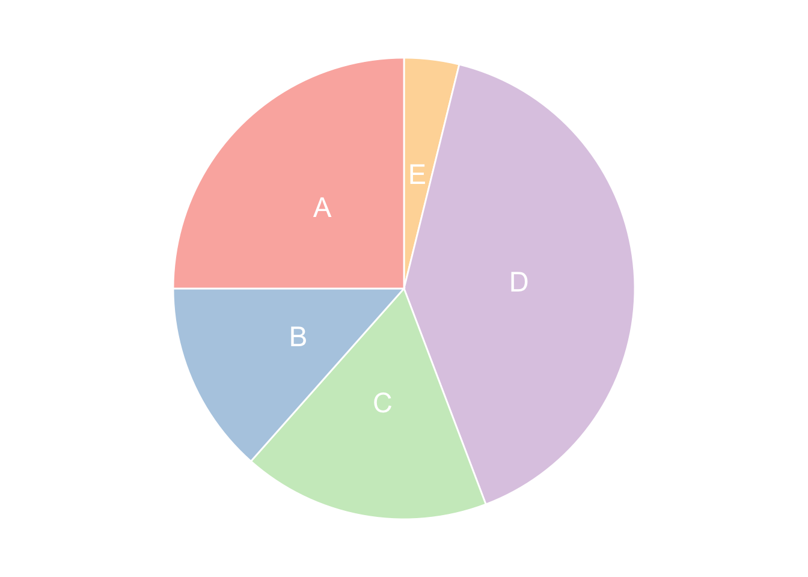
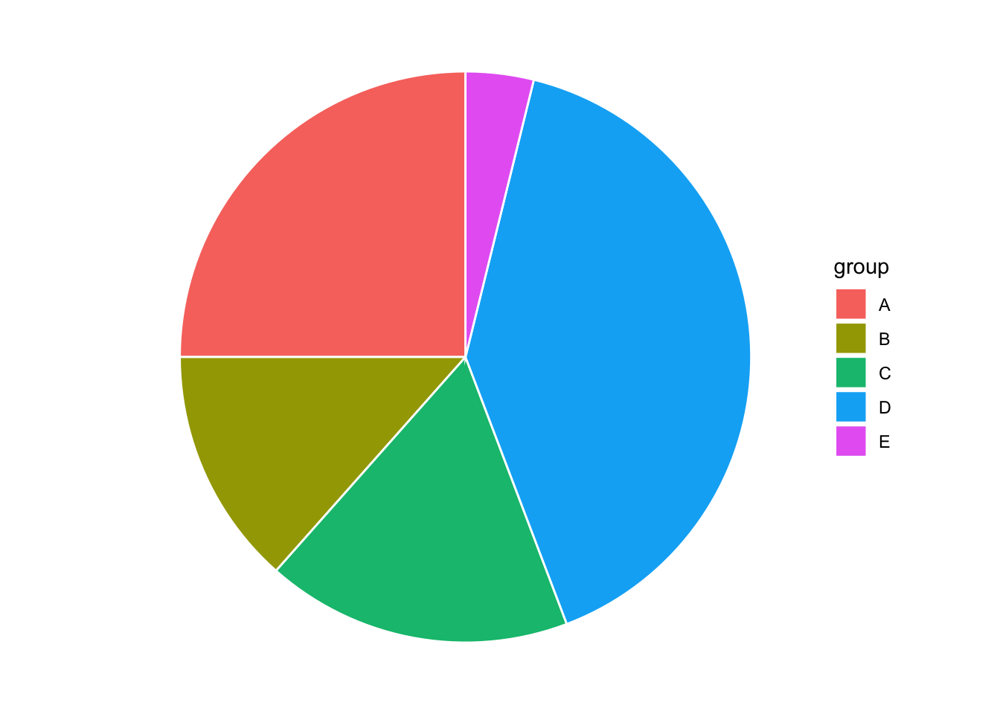
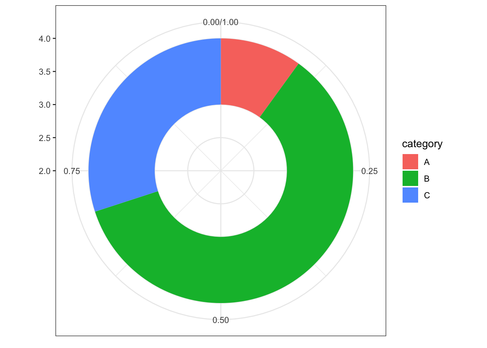
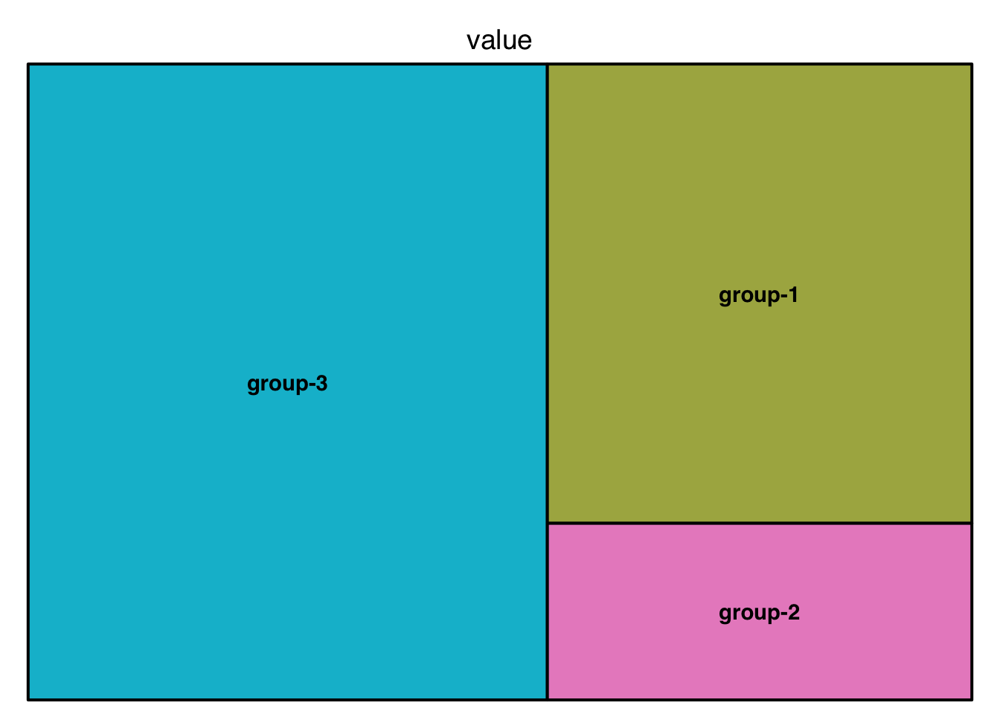

Pie Chart
BarChart circular with coord_polar()
# Create Data
data <- data.frame(
group=LETTERS[1:5],
value=c(13,7,9,21,2)
)
# Basic piechart
ggplot(data, aes(x="", y=value, fill=group)) +
geom_bar(stat="identity", width=1, color="white") +
coord_polar("y", start=0) +
theme_void() # remove background, grid, numeric labels
# Basic piechart
ggplot(data, aes(x="", y=value, fill=group)) +
geom_bar(stat="identity", width=1) +
coord_polar("y", start=0) +
labs(title="Add Title Here...",
x="",
y="") +
theme(axis.line = element_blank(),
axis.ticks = element_blank(),
panel.grid = element_blank())Adding labels with geom_text()
# Create Data
data <- data.frame(
group=LETTERS[1:5],
value=c(13,7,9,21,2)
)
# Compute the position of labels
data <- data %>%
arrange(desc(group)) %>%
mutate(prop = value / sum(data$value) *100) %>%
mutate(ypos = cumsum(prop)- 0.5*prop )
# Basic piechart
ggplot(data, aes(x="", y=prop, fill=group)) +
geom_bar(stat="identity", width=1, color="white") +
coord_polar("y", start=0) +
theme_void() +
theme(legend.position="none") +
geom_text(aes(y = ypos, label = group), color = "white", size=6) +
scale_fill_brewer(palette="Pastel1")
Add Lable in Legend
data <- data.frame(
group=c("Severe retinal detachments",
"Traumatic retinal detachments",
"Giant retinal tears",
"Other retinal detachments",
"Lifting of the subluxated lens",
"Other diseases"),
value=c(7468 , 2843 , 2889 ,827 ,1320 ,235 )
)
# Compute the position of labels
data <- data %>%
arrange(desc(group)) %>%
mutate(prop = paste(round(value / sum(data$value) *100,1),"%"),
group = paste(group,"(",prop, ")"))
### Converting all chr variables
data[sapply(data, is.character)] <- lapply(data[sapply(data, is.character)], as.factor)
data$group## [1] Traumatic retinal detachments ( 18.2 % )
## [2] Severe retinal detachments ( 47.9 % )
## [3] Other retinal detachments ( 5.3 % )
## [4] Other diseases ( 1.5 % )
## [5] Lifting of the subluxated lens ( 8.5 % )
## [6] Giant retinal tears ( 18.5 % )
## 6 Levels: Giant retinal tears ( 18.5 % ) ...# Basic piechart
ggplot(data, aes(x="", y=value, fill=group)) +
geom_bar(stat="identity", width=1, color="white") +
coord_polar("y", start=0) +
scale_color_brewer(palette="Dark2") +
scale_fill_discrete(name = "Disease",
breaks=c("Severe retinal detachments ( 47.9 % )",
"Traumatic retinal detachments ( 18.2 % )",
"Giant retinal tears ( 18.5 % )",
"Other retinal detachments ( 5.3 % )",
"Lifting of the subluxated lens ( 8.5 % )",
"Giant retinal tears ( 18.5 % )",
"Other diseases ( 1.5 % )")) +
labs(title="Add Title Here...",
x="",
y="") +
theme(legend.position="right")+
theme(axis.line = element_blank(),
axis.text = element_blank(),
axis.ticks = element_blank(),
panel.grid = element_blank())
Interactive Pie Chart
# library(plotly)
# Create fake data
df <- data.frame(
genre=c("Pop", "HipHop", "Latin", "Jazz"),
values = c(33,22,25,20)
)
plot_ly(data=df,labels=~genre, values=~values, type="pie") %>%
layout(title = 'United States Music Genre Prevalent in 1999',
xaxis = list(showgrid = FALSE, zeroline = FALSE, showticklabels = FALSE),
yaxis = list(showgrid = FALSE, zeroline = FALSE, showticklabels = FALSE))Donut chart
Basic Doughnut
# Create test data.
data <- data.frame(
category=c("A", "B", "C"),
count=c(10, 60, 30)
)
# Compute percentages
data$fraction = data$count / sum(data$count)
# Compute the cumulative percentages (top of each rectangle)
data$ymax = cumsum(data$fraction)
# Compute the bottom of each rectangle
data$ymin = c(0, head(data$ymax, n=-1))
# Make the plot
ggplot(data, aes(ymax=ymax, ymin=ymin, xmax=4, xmin=3, fill=category)) +
geom_rect() +
coord_polar(theta="y") + # Try to remove that to understand how the chart is built initially
xlim(c(2, 4)) +
theme_bw()Customization
# Create test data.
data <- data.frame(
category=c("A", "B", "C"),
count=c(10, 60, 30)
)
# Compute percentages
data$fraction <- data$count / sum(data$count)
# Compute the cumulative percentages (top of each rectangle)
data$ymax <- cumsum(data$fraction)
# Compute the bottom of each rectangle
data$ymin <- c(0, head(data$ymax, n=-1))
# Compute label position
data$labelPosition <- (data$ymax + data$ymin) / 2
# Compute a good label
data$label <- paste0(data$category, "\n value: ", data$count)
# Make the plot
ggplot(data, aes(ymax=ymax, ymin=ymin, xmax=4, xmin=3, fill=category)) +
geom_rect() +
geom_label( x=3.5, aes(y=labelPosition, label=label), size=5) +
scale_fill_brewer(palette=4) +
coord_polar(theta="y") +
xlim(c(2, 4)) +
theme_void() +
theme(legend.position = "none")
Donut Thickness
# Create test data.
data <- data.frame(
category=c("A", "B", "C"),
count=c(10, 60, 30)
)
# Compute percentages
data$fraction <- data$count / sum(data$count)
# Compute the cumulative percentages (top of each rectangle)
data$ymax <- cumsum(data$fraction)
# Compute the bottom of each rectangle
data$ymin <- c(0, head(data$ymax, n=-1))
# Compute label position
data$labelPosition <- (data$ymax + data$ymin) / 2
# Compute a good label
data$label <- paste0(data$category, "\n value: ", data$count)
# Make the plot
ggplot(data, aes(ymax=ymax, ymin=ymin, xmax=4, xmin=3, fill=category)) +
geom_rect() +
geom_text( x=2, aes(y=labelPosition, label=label, color=category), size=6) + # x here controls label position (inner / outer)
scale_fill_brewer(palette=3) +
scale_color_brewer(palette=3) +
coord_polar(theta="y") +
xlim(c(-1, 4)) +
theme_void() +
theme(legend.position = "none")
Treemap
Basic Treemap
# library("treemap")
group <- c("group-1","group-2","group-3")
value <- c(13,5,22)
data <- data.frame(group,value)
data %>% gt()| group | value |
|---|---|
| group-1 | 13 |
| group-2 | 5 |
| group-3 | 22 |
# treemap
treemap(data,
index="group",
vSize="value",
type="index"
)Treemap with subgroups
# Build Dataset
group <- c(rep("group-1",4),rep("group-2",2),rep("group-3",3))
subgroup <- paste("subgroup" , c(1,2,3,4,1,2,1,2,3), sep="-")
value <- c(13,5,22,12,11,7,3,1,23)
data <- data.frame(group,subgroup,value)
data %>% gt()| group | subgroup | value |
|---|---|---|
| group-1 | subgroup-1 | 13 |
| group-1 | subgroup-2 | 5 |
| group-1 | subgroup-3 | 22 |
| group-1 | subgroup-4 | 12 |
| group-2 | subgroup-1 | 11 |
| group-2 | subgroup-2 | 7 |
| group-3 | subgroup-1 | 3 |
| group-3 | subgroup-2 | 1 |
| group-3 | subgroup-3 | 23 |
# General features:
treemap(data, index=c("group","subgroup"),
vSize="value",
type="index",
palette = "Set1",
title="My Treemap",
fontsize.title=11, # Size of the title
) Interactive Treemap
## devtools::install_github("sada1993/d3treeR")
# library(d3treeR)
# dataset
group <- c(rep("group-1",4),rep("group-2",2),rep("group-3",3))
subgroup <- paste("subgroup" , c(1,2,3,4,1,2,1,2,3), sep="-")
value <- c(13,5,22,12,11,7,3,1,23)
data <- data.frame(group,subgroup,value)
# basic treemap
p <- treemap(data,
index=c("group","subgroup"),
vSize="value",
type="index",
palette = "Set2",
bg.labels=c("white"),
align.labels=list(
c("center", "center"),
c("right", "bottom")
)
) 
# make it interactive ("rootname" becomes the title of the plot):
inter <- d3tree2( p , rootname = "General" )
inter